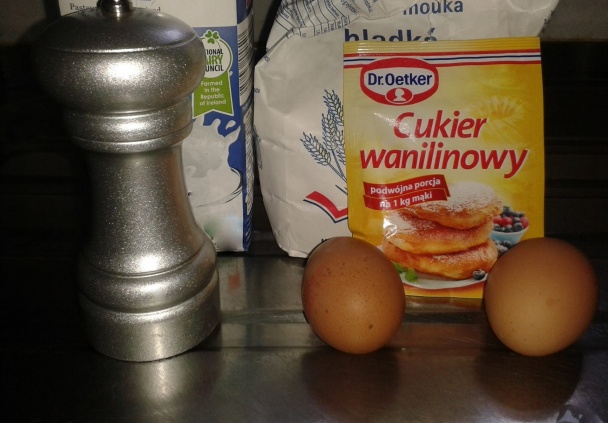
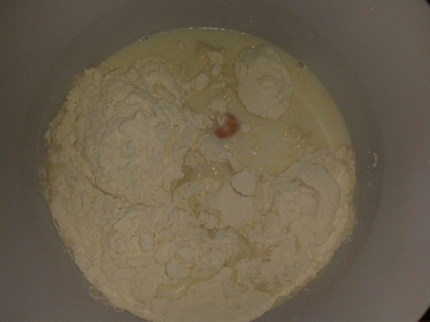
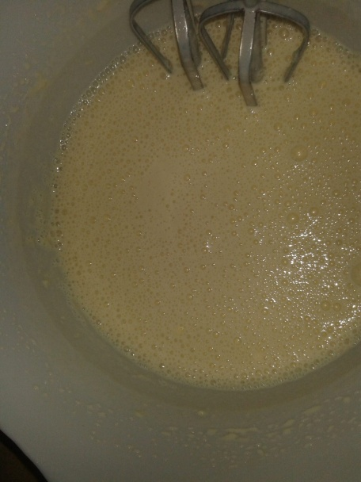
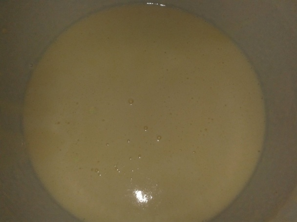
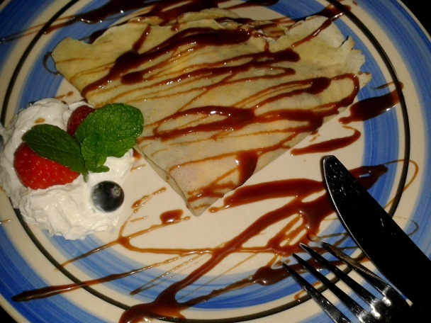

Palacinky sa dajú robiť na milión spôsobov - na sladko, na slano, tenké, hrubé, plnené, zapekané, flambované, to samozrejme všetci vieme.... :) Vyskúšala som mnoho receptov ale nedarilo sa a nedávno som našla recept na palacinky ktoré sú naozaj jemné, nadýchané, chutné,nelepia sa ale to samozrejme závisí aj od panvice na ktorej palacinky pečieme :)
Nachystáme si suroviny :) Ešte raz sa budem opakovať ako pri minulom recepte ja sa snažím robiť recepty teda fotiť postupy aj kvôli začiatočníkom čo napr palacinky ešte nerobili lebo to dosť pomáha keď sú aj fotky pri recepte,viem z vlastnej skúsenosti ;) napr. zbehlé kuchárky/kuchári určite nepotrebujú fotky lebo palacinky vedia už možno aj z pamäti takže tak :)
Všetky suroviny si dáme do jednej misky.
Keď už máme všetky suroviny v miske cesto mixujeme s mixérom ...a necháme aspoň 15-20 minút odpočívať niekto možno cesto mieša ručne ale s mixérom to je rýchle a dobre :)
Cesto nám postálo 20 minút skontrolujeme či ma správnu hustotu a môžeme sa pustiť do pečenia :) Vymastíme si panvicu s olejom úplne jemnučko nie veľa oleja a poriadne rozohrejeme panvicu a môžeme piecť.. naozaj je dosť dôležité na akej panvici palacinky pečieme ja som piekla na tefal panvici, čo sa aj odzrkadlilo lebo sa mi ani jedna palacinka nepotrhala ani ta prvá....
Upečené palacinky si ochutíme podľa vlastného gusta :) ja dávam do palacinky nutelu, čerstvé ovocie nakrájané jahody,maliny,čučoriedky a šľahačku, keď dávam šľahačku do vnútra je to super fakt a určite to vyskúšajte :) ozdobil som topingom , šľahačkou, ovocím a mätou... Dobrú chuť :)
{kind=link}
{kind=link}
{kind=link}
{kind=link}
{kind=link}